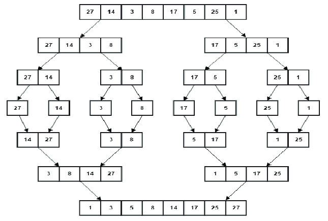
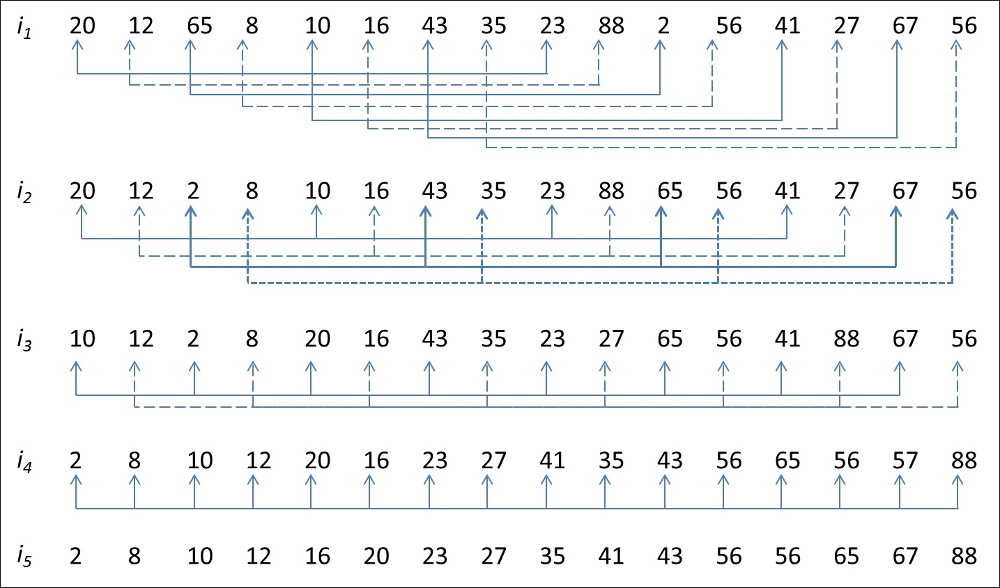

Shorting
Pengertian Algoritma Shorting (Pengurutan) Dalam Pemrograman
Algoritma sorting adalah suatu metode atau teknik untuk mengurutkan data atau elemen-elemen dalam suatu struktur data secara teratur. Algoritma sorting merupakan salah satu konsep penting dalam pemrograman, tujuannya untuk mengubah data yang tidak teratur menjadi urutan yang teratur, misalnya mengurutkan data dari yang terbesar ke yang terkecil, atau sebaliknya.
Jenis Algoritma Shorting
Buble Shorting
Bubble Sort adalah salah satu algoritma sorting yang paling sederhana. Algoritma ini bekerja dengan membandingkan elemen-elemen berpasangan dalam daftar dan menukar mereka jika diperlukan. Proses ini terus berlanjut hingga semua elemen berada dalam urutan yang benar.
First Pass
- Mulai dari indeks pertama array.
- Bandingkan element pertama dengan element kedua. Jika element pertama lebih besar dari element kedua, tukar posisi keduanya.
- Lanjutkan dengan membandingkan element kedua dengan element ketiga, dan seterusnya hingga satu element sebelum element terakhir.
- Setelah mencapai element terakhir, element terbesar akan berada di posisi terakhir.
Second Pass
- Ulangi langkah-langkah 2-4 untuk element-element yang belum terurut, tetapi kali ini hanya hingga element sebelum element terakhir yang sudah terurut pada iterasi sebelumnya.
Third Pass
- Algoritma berhenti ketika tidak ada lagi pertukaran posisi element yang dilakukan pada iterasi.
Jenis Algoritma Shorting
Quick Sort
Algoritma Quick Sort adalah salah satu algoritma pengurutan yang efisien dan banyak digunakan dalam pemrograman. Metode ini menggunakan pendekatan “Pecah dan Taklukkan” untuk mengurutkan elemen-elemen dalam sebuah daftar atau array Dalam prosesnya, algoritma ini memilih suatu elemen sebagai pivot dan kemudian mempartisi sisa elemen-elemen ke dalam dua kelompok: elemen-elemen yang lebih kecil dari pivot, dan elemen-elemen yang lebih besar dari pivot. Setelah itu, Quick Sort secara rekursif mengurutkan kedua kelompok tersebut hingga seluruh elemen berada pada posisi yang tepat. Algoritma Quick Sort adalah metode pengurutan data yang efisien dan populer dalam ilmu komputer. Prinsip kerjanya berdasarkan metode “Pecah dan Taklukkan,” di mana data yang akan diurutkan dipartisi menjadi dua bagian, lalu bagian-bagian tersebut diurutkan secara terpisah, dan akhirnya digabungkan kembali.

Cara Kerja Algoritma Quick Sort
- Pemilihan Pivot
Pertama, algoritma Quick Sort memilih sebuah elemen dari data yang akan diurutkan sebagai pivot. Pemilihan pivot dapat dilakukan dengan berbagai cara, seperti memilih elemen pertama, terakhir, atau bahkan elemen di tengah data. Pemilihan pivot yang cerdas dapat membantu meningkatkan kinerja algoritma.
- Partisi Data
Setelah pivot dipilih, algoritma melakukan proses partisi pada data. Ini berarti semua elemen dalam data akan dibagi menjadi dua kelompok. Elemen-elemen yang lebih kecil dari pivot akan berada di satu kelompok, sementara elemen-elemen yang lebih besar dari pivot akan berada di kelompok lain.
- Rekursif pada Sub-Array
Setelah partisi, kita memiliki dua sub-array terpisah, yaitu sub-array dengan elemen-elemen yang lebih kecil dari pivot dan sub-array dengan elemen-elemen yang lebih besar dari pivot
- Penggabungan (Combine)
Setelah semua sub-array terurut, tahap akhir dari algoritma Quick Sort adalah menggabungkan hasil pengurutan tersebut menjadi satu kesatuan. Hasil akhirnya adalah array yang telah diurutkan secara keseluruhan.
- Selesai
Proses Quick Sort selesai, dan data telah berhasil diurutkan dengan cepat dan efisien.
Kelebihan Algoritma Quick Sort
- Efisiensi Waktu
Algoritma Quick Sort memiliki efisiensi waktu yang sangat baik. Pada rata-rata kasus, kompleksitas waktu algoritma ini adalah O(n log n), di mana “n” adalah jumlah elemen dalam data yang akan diurutkan. Dengan kompleksitas waktu yang cepat, Quick Sort sangat efisien untuk mengurutkan data yang besar.
- Efisiensi Penggunaan Memori
Quick Sort hanya memerlukan sedikit ruang tambahan untuk menyimpan beberapa indeks dan variabel sementara. Hal ini menjadikannya algoritma yang efisien dalam penggunaan memori. Dalam implementasinya, Quick Sort dapat bekerja dengan baik dalam lingkungan dengan sumber daya terbatas.
- Stabilitas (stability)
Algoritma Quick Sort adalah algoritma pengurutan tidak stabil, artinya jika ada elemen dengan nilai yang sama, urutan relatif mereka mungkin berubah setelah proses pengurutan.
Meskipun terkadang stabilitas diperlukan, dalam beberapa kasus, stabilitas tidak dianggap sebagai masalah yang kritis. Kecepatan dan efisiensi penggunaan memori menjadi lebih penting, dan di sinilah Quick Sort unggul.
- Penanganan Data Besar
Salah satu kekuatan utama dari Quick Sort adalah kinerjanya yang sangat baik dalam menangani data yang sangat besar. Ketika dihadapkan pada data yang besar, Quick Sort cenderung mengungguli algoritma pengurutan lainnya, seperti Bubble Sort atau Insertion Sort.
- Kemampuan Paralel
Algoritma Quick Sort memungkinkan pelaksanaan paralel yang efisien. Dalam beberapa kasus, data dapat dipartisi dan diurutkan secara independen dalam beberapa proses atau thread, meningkatkan kinerja secara keseluruhan.
Kekurangan Algoritma Quick Sort
- Ketidakstabilan (Unstability)
Algoritma Quick Sort adalah algoritma pengurutan yang tidak stabil. Artinya, jika terdapat elemen dengan nilai yang sama, urutan relatif mereka mungkin berubah setelah proses pengurutan. Hal ini menjadi masalah jika stabilitas data menjadi pertimbangan penting dalam kasus tertentu.
- Kinerja Terburuk (Worst-Case Performance)
Kinerja Algoritma Quick Sort dapat menjadi buruk pada kasus terburuk, yaitu ketika pivot dipilih secara tidak optimal dan data sudah terurut atau hampir terurut. Dalam skenario ini, Quick Sort dapat berjalan dengan kompleksitas waktu O(n^2), di mana “n” adalah jumlah elemen dalam data.
Ini terjadi karena setiap pemilihan pivot menyebabkan partisi data menjadi dua bagian yang tidak seimbang, dan ini dapat terus terjadi pada setiap rekursi, memperlambat proses pengurutan.
- Tergantung pada Pemilihan Pivot
Kinerja Algoritma Quick Sort sangat dipengaruhi oleh pemilihan pivot yang cerdas. Jika pivot dipilih dengan buruk atau dalam kasus terburuk, performa algoritma dapat menjadi jauh lebih buruk dibandingkan dengan algoritma pengurutan lainnya. Memilih pivot yang benar-benar acak atau selalu memilih elemen terakhir sebagai pivot dapat menyebabkan ketidakseimbangan dalam partisi data.
- Tidak Cocok untuk Data Terikat (Linked List)
Algoritma Quick Sort tidak secara alami cocok untuk data terikat (linked list) karena pengaksesan elemen secara acak dalam linked list tidak efisien. Jika kita ingin mengurutkan data terikat menggunakan Quick Sort, kita harus mempertimbangkan strategi khusus untuk mengakses dan mempartisi data secara efisien.
Jenis Algoritma Shorting
Merge Sort
Algoritma Merge Sort adalah salah satu metode pengurutan data yang berbasis perbandingan dan memanfaatkan teknik “divide and conquer” atau “bagi dan taklukkan”. Metode ini efisien untuk mengurutkan kumpulan data dengan ukuran besar.
Pada dasarnya, algoritma Merge Sort memecah daftar data menjadi bagian-bagian kecil, mengurutkan masing-masing bagian tersebut secara terpisah, dan kemudian menggabungkannya kembali menjadi satu kesatuan dalam urutan yang benar.
Algoritma Merge Sort ini sangat efektif karena dalam setiap langkahnya, ukuran data yang harus diurutkan berkurang menjadi setengahnya. Oleh karena itu, kompleksitas waktu algoritma ini adalah O(n log n), di mana “n” adalah jumlah elemen data yang akan diurutkan. Ini menjadikan Merge Sort pilihan yang cocok untuk mengurutkan data dalam skala besar, terutama ketika efisiensi waktu menjadi pertimbangan utama.

Cara Kerja Algoritma Merge Sort
- “Divide” atau Pemisahan
Langkah pertama dalam algoritma Merge Sort adalah membagi daftar data yang akan diurutkan menjadi dua bagian hampir sama ukurannya. Hal ini dilakukan dengan menentukan elemen tengah dari daftar data sebagai titik pembagiannya.
Proses ini berlangsung secara rekursif, artinya kedua bagian yang baru terbentuk juga akan dibagi menjadi bagian-bagian lebih kecil. Pembagian ini terus berlanjut hingga setiap bagian hanya memiliki satu elemen atau tidak memiliki elemen sama sekali (jika daftar datanya kosong).
Pembagian yang berulang ini akan menciptakan pohon rekursi, di mana setiap simpul mewakili proses pengurutan pada bagian-bagian data yang berbeda.
- “Conquer” atau Penaklukkan
Setelah proses pembagian berakhir, langkah selanjutnya adalah mengurutkan masing-masing bagian secara terpisah. Ini dilakukan dengan membandingkan elemen-elemen dalam setiap bagian dan menyusunnya dalam urutan yang benar.
Bagian-bagian yang sudah diurutkan ini akan membentuk daftar data yang lebih kecil, namun sudah terurut dengan benar sesuai aturan algoritma Merge Sort.
- “Merge” atau Penggabungan
Setelah bagian-bagian data terurut, langkah selanjutnya adalah menggabungkannya kembali menjadi satu kesatuan dengan urutan yang benar. Inilah sebabnya mengapa algoritma ini disebut “Merge Sort”.
Proses penggabungan dimulai dengan membandingkan elemen pertama dari masing-masing bagian. Elemen yang lebih kecil ditempatkan terlebih dahulu dalam daftar hasil penggabungan.
Selanjutnya, elemen yang lebih kecil tadi akan dihapus dari bagian asalnya dan akan dibandingkan lagi dengan elemen pertama pada bagian yang sama atau berbeda. Proses ini berlanjut hingga semua elemen dari kedua bagian tergabung dengan urutan yang tepat dalam daftar hasil penggabungan.
Jika ada elemen yang tersisa di salah satu bagian setelah proses penggabungan selesai, elemen-elemen tersebut akan langsung ditambahkan ke daftar hasil karena kita sudah mengetahui bahwa elemen-elemen tersebut sudah dalam urutan yang benar.
- Kompleksitas Waktu
Keunggulan dari algoritma Merge Sort terletak pada kompleksitas waktunya yang relatif rendah dan stabil. Dalam setiap langkahnya, ukuran data yang harus diurutkan berkurang menjadi setengahnya, sehingga kompleksitas waktunya adalah O(n log n), di mana “n” adalah jumlah elemen data yang akan diurutkan.
Hal ini menjadikan Merge Sort cocok untuk mengurutkan data dalam skala besar, terutama ketika efisiensi waktu menjadi pertimbangan utama.
Kelebihan Algoritma Merge Sort
- Stabilitas
Merge Sort adalah algoritma pengurutan yang stabil, artinya jika ada dua elemen dengan nilai yang sama, maka urutan relatif kedua elemen tersebut tetap dipertahankan setelah proses pengurutan. Hal ini penting dalam beberapa kasus di mana kita ingin mempertahankan urutan asli elemen-elemen yang memiliki kunci atau atribut yang sama.
- Efisiensi pada Data Besar
Salah satu kelebihan utama Merge Sort adalah kinerja waktu yang baik pada data dengan ukuran besar. Karena algoritma ini menggunakan pendekatan “divide and conquer”, di mana data dibagi menjadi bagian-bagian kecil yang diurutkan terlebih dahulu sebelum digabungkan kembali, kompleksitas waktunya adalah O(n log n). Hal ini membuatnya lebih efisien dibandingkan beberapa metode pengurutan lainnya, terutama pada data dalam skala besar.
- Penggunaan Memori
Meskipun Merge Sort menggunakan pendekatan rekursif dan membagi data menjadi beberapa bagian, algoritma ini dapat diimplementasikan dengan penggunaan memori yang moderat.
Selain itu, Merge Sort tidak memerlukan memori tambahan (in-place), kecuali pada tahap penggabungan. Hal ini memastikan bahwa algoritma ini tidak akan menghabiskan terlalu banyak memori bahkan untuk data dengan ukuran yang sangat besar.
- Kasus Terburuk yang Konsisten
Beberapa algoritma pengurutan, seperti Quick Sort, memiliki kinerja yang sangat baik pada sebagian besar kasus, namun bisa memiliki kasus terburuk yang memiliki kompleksitas waktu yang sangat tinggi.
Namun, Merge Sort memiliki kinerja yang konsisten dalam berbagai kasus dan tidak bergantung pada pilihan elemen acak (seperti pada Quick Sort). Oleh karena itu, algoritma ini lebih dapat diandalkan dan meminimalkan risiko terjadinya kasus terburuk yang menyebabkan penurunan performa.
- Pengurutan Linked List
Merge Sort juga dapat digunakan untuk mengurutkan Linked List dengan efisien tanpa perlu memodifikasi struktur data aslinya. Karena algoritma ini hanya memerlukan penggabungan simpul-simpul dalam urutan yang benar, Merge Sort menjadi pilihan yang baik untuk mengurutkan Linked List dengan kinerja yang baik.
Kekurangan Algoritma Merge Sort
- Penggunaan Memori Tambahan
Salah satu kelemahan utama Merge Sort adalah penggunaan memori tambahan untuk menyimpan sementara bagian-bagian data selama proses penggabungan (merge). Saat data dipecah menjadi bagian-bagian kecil, diperlukan tempat penyimpanan untuk setiap bagian tersebut, yang mempengaruhi penggunaan memori secara keseluruhan. Algoritma ini memerlukan ruang memori tambahan yang sebanding dengan ukuran data yang akan diurutkan.
- Kompleksitas Penggabungan
Tahap penggabungan (merge) pada Algoritma Merge Sort memerlukan lebih banyak operasi pembandingan dan penyalinan elemen. Meskipun algoritma ini efisien dalam hal kinerja waktu, namun proses penggabungan ini bisa menjadi lebih kompleks dan memakan waktu jika tidak diimplementasikan secara efisien.
- Pengurutan Data Terkini
Merge Sort merupakan algoritma pengurutan non-inplace, artinya ia menghasilkan urutan data baru tanpa mengubah data asli. Hal ini bisa menjadi kelemahan terutama jika data asli besar dan harus diurutkan secara langsung. Pengurutan tanpa modifikasi data asli memerlukan alokasi memori tambahan untuk hasil pengurutan.
- Tidak Optimal untuk Data Kecil
Meskipun Merge Sort memiliki kinerja yang sangat baik pada data dengan ukuran besar, algoritma ini mungkin tidak optimal untuk data yang relatif kecil. Pendekatan rekursif dan penggabungan data kecil bisa mengakibatkan sedikit overhead yang menyebabkan algoritma ini tidak seefisien saat mengurutkan data kecil.
- Tidak Stabil pada Beberapa Implementasi
Walaupun Merge Sort secara teori adalah algoritma pengurutan stabil, namun implementasinya dapat mempengaruhi stabilitasnya. Beberapa implementasi Merge Sort bisa kehilangan stabilitas jika tidak diatur dengan benar saat melakukan penggabungan.
Jenis Algoritma Shorting
Selection Sort
Algoritma Selection Sort adalah metode sederhana untuk mengurutkan data dalam suatu larik atau daftar. Konsepnya adalah dengan mencari elemen terkecil dalam larik dan menukarnya dengan elemen pertama.
Kemudian, mencari elemen terkecil dalam sisa larik yang belum diurutkan dan menukarnya dengan elemen kedua, dan begitu seterusnya. Proses ini diulang hingga seluruh larik diurutkan secara berurutan.
fungsi algoritma selection Sort
- Pengurutan Data
Algoritma Selection Sort berfungsi untuk mengurutkan data dalam suatu larik atau daftar. Dengan cara mencari elemen terkecil dalam sisa larik yang belum diurutkan dan menukarnya dengan elemen pertama, algoritma ini dapat mengurutkan seluruh larik dengan tepat dan efisien.
- Sederhana dan Mudah Dipahami
Algoritma Selection Sort merupakan salah satu algoritma pengurutan yang paling sederhana dan mudah dipahami. Implementasinya dapat dilakukan dengan kode yang relatif singkat dan tidak rumit, sehingga algoritma ini dapat diaplikasikan dengan mudah dalam berbagai bahasa pemrograman.
- Performa untuk Larik Kecil
Algoritma Selection Sort bekerja lebih baik untuk larik dengan jumlah elemen yang kecil atau sedang. Ketika larik memiliki jumlah elemen yang sangat besar, algoritma ini cenderung menjadi lebih lambat karena membutuhkan lebih banyak perbandingan dan pertukaran elemen.

Cara Kerja Algoritma Selection Sort
- Mulai dengan larik data yang akan diurutkan.
- Tentukan indeks pertama sebagai posisi awal untuk mencari elemen terkecil dalam larik. Inisialisasi indeks pertama dengan nilai 0.
- Cari elemen terkecil dalam sisa larik yang belum diurutkan. Untuk melakukan ini, lakukan langkah-langkah berikut:
Bandingkan elemen pada indeks pertama (posisi awal pencarian) dengan setiap elemen dalam sisa larik, mulai dari indeks pertama + 1 hingga indeks terakhir.
Jika elemen yang dibandingkan lebih kecil dari elemen pada indeks pertama, catat indeks elemen yang lebih kecil tersebut sebagai indeks terkecil.
Setelah mencari seluruh elemen, tukar elemen terkecil dengan elemen pada indeks pertama.
- Pindahkan indeks penanda ke elemen kedua dalam larik, dan lakukan langkah 3 kembali untuk mencari elemen terkecil dalam sisa larik yang belum diurutkan.
- Ulangi langkah 3 dan 4 untuk seluruh elemen dalam larik hingga seluruh larik diurutkan secara berurutan.
Kelebihan Algoritma Algoritma Selection Sort
- Sederhana dan Mudah Dipahami: Algoritma Selection Sort adalah salah satu algoritma pengurutan yang paling sederhana dan mudah dipahami. Implementasinya dapat dilakukan dengan kode yang relatif singkat dan tidak memerlukan struktur data tambahan.
- Mudah untuk Diimplementasikan: Algoritma ini relatif mudah diimplementasikan dalam berbagai bahasa pemrograman karena hanya melibatkan iterasi melalui larik dan beberapa pertukaran elemen.
- Stabil: Selection Sort stabil dalam arti bahwa jika ada dua elemen yang memiliki nilai yang sama, urutan relatif mereka tidak berubah setelah pengurutan.
- Jumlah Pertukaran Terbatas: Algoritma ini memiliki jumlah pertukaran elemen yang terbatas, yaitu sebanyak n – 1 kali, di mana n adalah jumlah elemen dalam larik. Hal ini membuatnya cocok untuk situasi di mana pertukaran data memiliki biaya tinggi.
Kekurangan Algoritma Algoritma Selection Sort
- Performa untuk Larik Besar: Salah satu kelemahan utama Selection Sort adalah kinerjanya yang kurang efisien untuk larik dengan jumlah elemen yang besar. Waktu eksekusi algoritma ini memiliki kompleksitas O(n^2), di mana n adalah jumlah elemen dalam larik. Sebagai hasilnya, algoritma ini menjadi sangat lambat ketika lariknya besar.
- Tidak Adapting: Selection Sort tidak mengadaptasi terhadap keadaan larik yang hampir terurut. Algoritma ini tetap melakukan jumlah pertukaran yang sama, terlepas dari seberapa terurutnya larik pada awalnya.
- Tidak Efisien untuk Data Terbesar: Algoritma ini tidak efisien untuk data yang sudah diurutkan secara terbalik atau dalam keadaan yang hampir terurut, karena tetap akan mencari nilai terkecil dan menukarnya pada setiap iterasi.
- Kompleksitas Waktu: Karena algoritma ini memiliki kompleksitas waktu kuadrat, kinerja dapat menjadi masalah ketika mengurutkan larik dengan banyak elemen, terutama jika ada pilihan algoritma pengurutan lain yang lebih efisien untuk situasi tersebut.
Jenis Algoritma Shorting
Insertion Sort
Asal kata insertion adalah insert yang artinya memasukkan atau menyisipkan. Maka algoritma insertion sort adalah algoritma untuk pengurutan data dengan cara mengambil elemen pada array, selanjutnya data tersebut akan disisipkan pada posisi yang seharusnya. Elemen pertama dan elemen yang sudah diurutkan akan dibandingkan. Perbandingan tersebut akan terus dilakukan sampai elemen tidak ada yang tersisa, atau sampai semua elemen telah diurutkan.
Cara kerja algoritma ini yaitu dengan melakukan perulangan. Pada setiap perulangannya, insertion sort akan memindahkan nilai elemen untuk kemudian disisipkan. Hal tersebut akan dilakukan secara berulang, sehingga semua elemen telah berada di posisi yang tepat.

Cara Kerja Algoritma Insertion Sort
Sebagaimana telah sedikit dijelaskan di atas, bahwa algoritma insertion sort mengurutkan data dengan cara kerjanya yaitu membagi elemen data menjadi dua bagian. Kedua bagian tersebut yaitu bagian yang belum diurutkan dan bagian yang sudah diurutkan.
Pada proses pengurutan awal, bagian yang sudah diurutkan hanya akan terdiri dari satu elemen, yakni elemen pertama dari data tersebut. Selanjutnya algoritma akan memproses pengurutan lebih lanjut dan mengulangi langkah sebelumnya, untuk mengambil elemen data yang belum diurutkan. Lalu akan menyisipkan atau memasukkan elemen tersebut pada tempat yang tepat.
- Langkah pertama, mulai dengan elemen data yang akan diurutkan.
- Selanjutnya menentukan elemen pertama untuk bagian kedua atau bagian yang sudah diurutkan..
- Kemudian ambil elemen berikutnya dari bagian elemen data yang belum diurutkan, lalu simpan di dalam suatu variabel sementara (contohnya, disebut “key”).
- Langkah selanjutnya bandingkan elemen data pada variabel sementara dengan setiap elemen yang terdapat pada bagian elemen data yang sudah diurutkan, dimulai dari kanan ke kiri.
- Apabila elemen pada bagian elemen data yang sudah diurutkan lebih besar dari elemen variabel sementara, geser elemen tersebut ke posisi berikutnya supaya ada ruang untuk menyisipkan elemen sementara.
- Ulangi langkah 4 dan 5 hingga elemen sementara sudah ditempatkan pada posisi yang tepat dalam bagian elemen data yang sudah diurutkan.
- Masukkan elemen pada variabel sementara pada posisi yang tepat di dalam bagian elemen yang sudah diurutkan.
Masukkan elemen pada variabel sementara pada posisi yang tepat di dalam bagian elemen yang sudah diurutkan.
Jenis Algoritma Shorting
Shell Sort
Untuk memahami apa itu shell sort, pertama-tama kita harus mengetahui apa itu algoritma. Algoritma adalah sekumpulan instruksi atau langkah-langkah yang digunakan untuk menyelesaikan suatu masalah atau tugas tertentu.
Jadi, shell sort adalah salah satu jenis algoritma yang digunakan dalam pemrograman untuk mengurutkan data atau elemen. Algoritma ini dinamai berdasarkan penemunya, Donald L. Shell. Shell sort biasa digunakan dalam penyelesaian masalah pengurutan data karena efisiensi dan kecepatannya yang relatif tinggi dibandingkan dengan algoritma pengurutan lainnya.

Cara Kerja Algoritma Shell Sort
- Inisialisasi Gap
Shell sort bekerja dengan menggunakan konsep pengurutan insertion sort, tetapi dengan sedikit modifikasi. Pada awalnya, shell sort akan menentukan gap atau jarak antara elemen yang akan diurutkan. Nilai gap biasanya adalah setengah dari jumlah total elemen, tetapi bisa juga menggunakan nilai lain tergantung kebutuhan.
- Pengurutan Elemen
Setelah gap ditentukan, shell sort kemudian akan membandingkan setiap elemen yang memiliki jarak sejauh gap tersebut. Jika elemen pertama lebih besar dari elemen kedua, maka posisi keduanya akan ditukar. Hal ini akan terus diulang hingga semua elemen telah dibandingkan dan diurutkan.
- Pengurangan Gap
Setelah semua elemen telah dibandingkan dan diurutkan, gap kemudian akan dikurangi — biasanya menjadi setengah dari nilai gap sebelumnya. Proses pengurutan kemudian akan diulang dengan menggunakan nilai gap yang baru.
Proses tersebut terus berlanjut hingga nilai gap menjadi nol. Pada titik ini, semua elemen sudah berada pada posisi yang tepat dan pengurutan selesai.
Kelebihan Algoritma Algoritma Shell Sort
- Sederhana dan Mudah Dipahami: Algoritma Selection Sort adalah salah satu algoritma pengurutan yang paling sederhana dan mudah dipahami. Implementasinya dapat dilakukan dengan kode yang relatif singkat dan tidak memerlukan struktur data tambahan.
- Mudah untuk Diimplementasikan: Algoritma ini relatif mudah diimplementasikan dalam berbagai bahasa pemrograman karena hanya melibatkan iterasi melalui larik dan beberapa pertukaran elemen.
- Stabil: Selection Sort stabil dalam arti bahwa jika ada dua elemen yang memiliki nilai yang sama, urutan relatif mereka tidak berubah setelah pengurutan.
- Jumlah Pertukaran Terbatas: Algoritma ini memiliki jumlah pertukaran elemen yang terbatas, yaitu sebanyak n – 1 kali, di mana n adalah jumlah elemen dalam larik. Hal ini membuatnya cocok untuk situasi di mana pertukaran data memiliki biaya tinggi.
Kekurangan Algoritma Algoritma Shell Sort
- Performa untuk Larik Besar: Salah satu kelemahan utama Selection Sort adalah kinerjanya yang kurang efisien untuk larik dengan jumlah elemen yang besar. Waktu eksekusi algoritma ini memiliki kompleksitas O(n^2), di mana n adalah jumlah elemen dalam larik. Sebagai hasilnya, algoritma ini menjadi sangat lambat ketika lariknya besar.
- Tidak Adapting: Selection Sort tidak mengadaptasi terhadap keadaan larik yang hampir terurut. Algoritma ini tetap melakukan jumlah pertukaran yang sama, terlepas dari seberapa terurutnya larik pada awalnya.
- Tidak Efisien untuk Data Terbesar: Algoritma ini tidak efisien untuk data yang sudah diurutkan secara terbalik atau dalam keadaan yang hampir terurut, karena tetap akan mencari nilai terkecil dan menukarnya pada setiap iterasi.
- Kompleksitas Waktu: Karena algoritma ini memiliki kompleksitas waktu kuadrat, kinerja dapat menjadi masalah ketika mengurutkan larik dengan banyak elemen, terutama jika ada pilihan algoritma pengurutan lain yang lebih efisien untuk situasi tersebut.